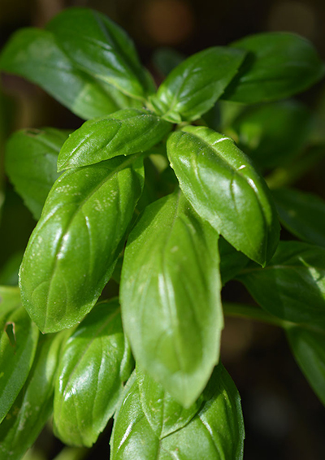

Sød, storbladet basilikum
Ocimum Basilicum
Type: Basilikum
Højde: 45 cm
Såafstand: 20 cm
Rækkeafstand: 30 cm
Sådybde: 1 cm
Lysforhold: Sol
Forspiring: Marts April Maj Juni
Udplantning/såning på friland: Maj Juni Juli
Spiring efter: ca. 20 dage
Moden til høst efter: ca. 60 dage